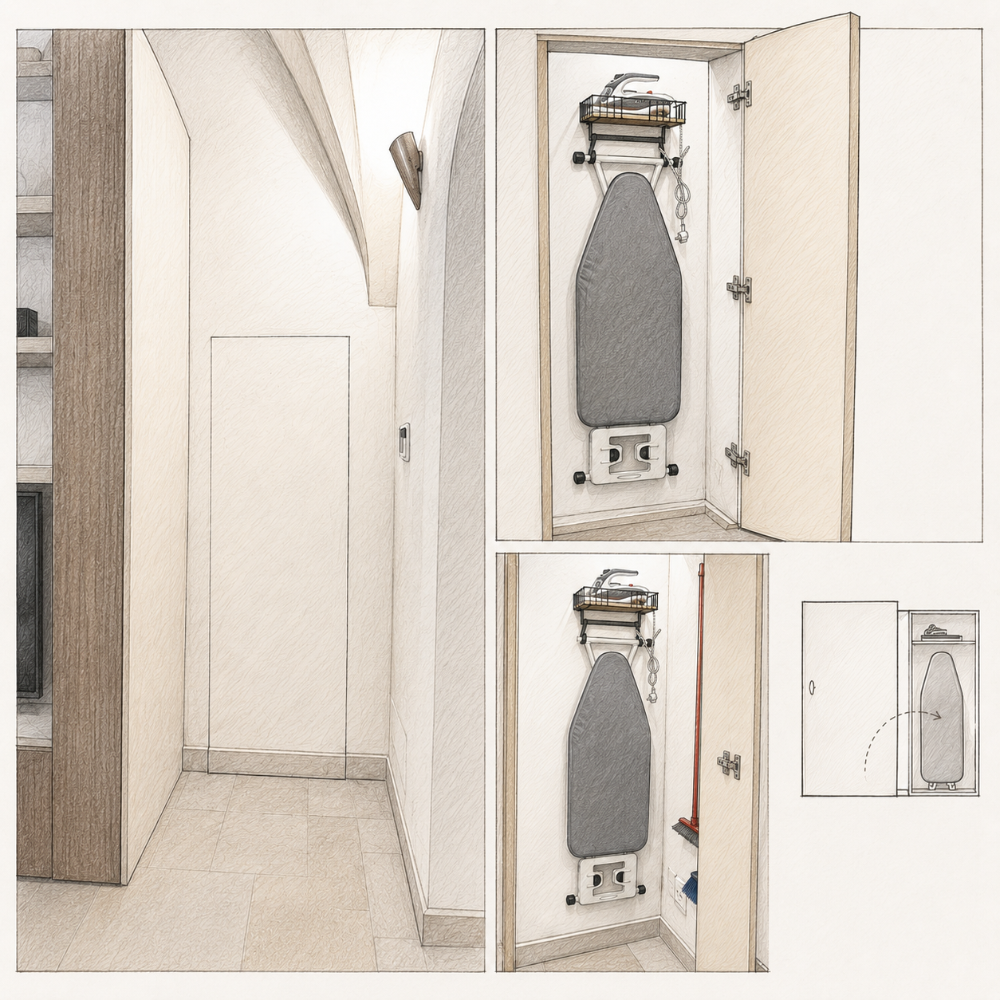

Nell'armadio di servizio mostrato nell'immagine trovi l'asse da stiro, il ferro da stiro e alcuni strumenti utili per la pulizia della casa. Usa l'immagine qui sotto come riferimento per individuare l'anta corretta.

inventory_2Cosa trovi all'interno
Asse da stiro
Ferro da stiro
Scopa
Paletta / scopino
Dopo l'uso:riponi tutto nello stesso armadio, lasciando asse e ferro nella posizione mostrata nell'immagine.